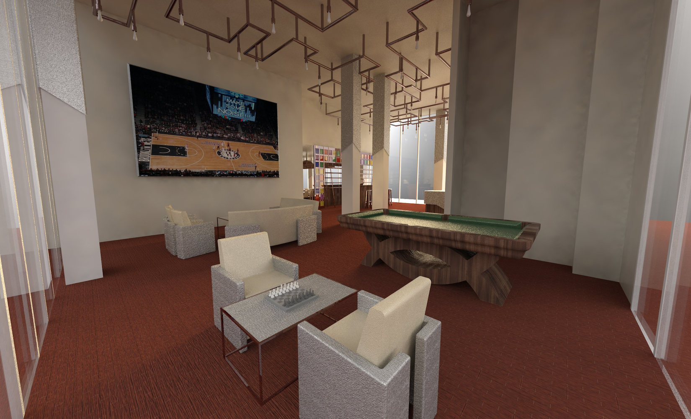
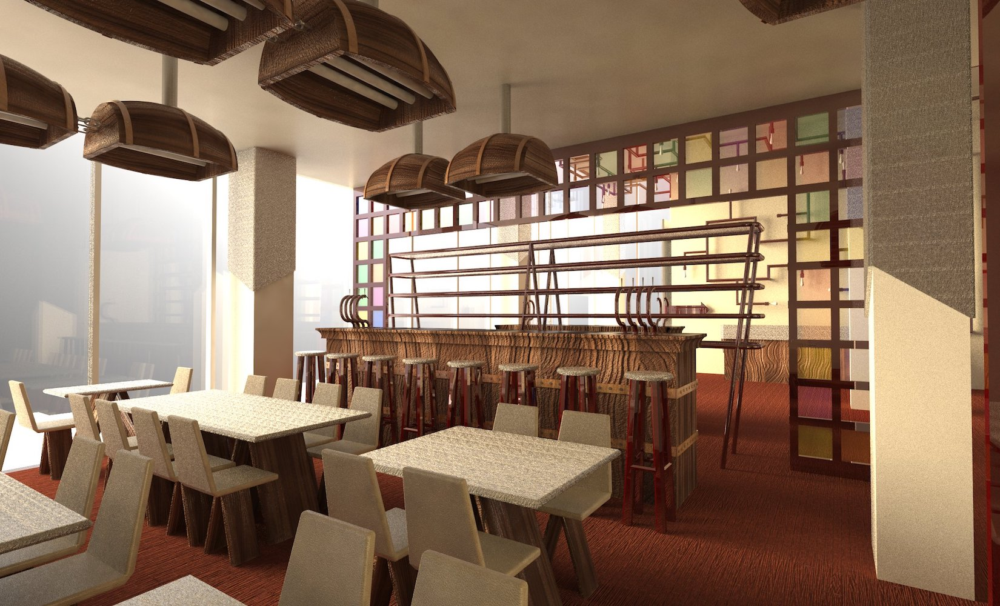
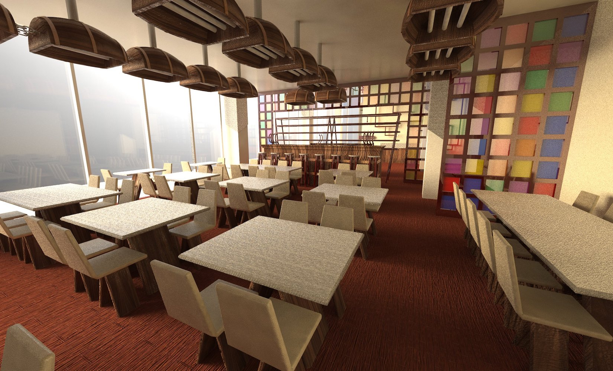
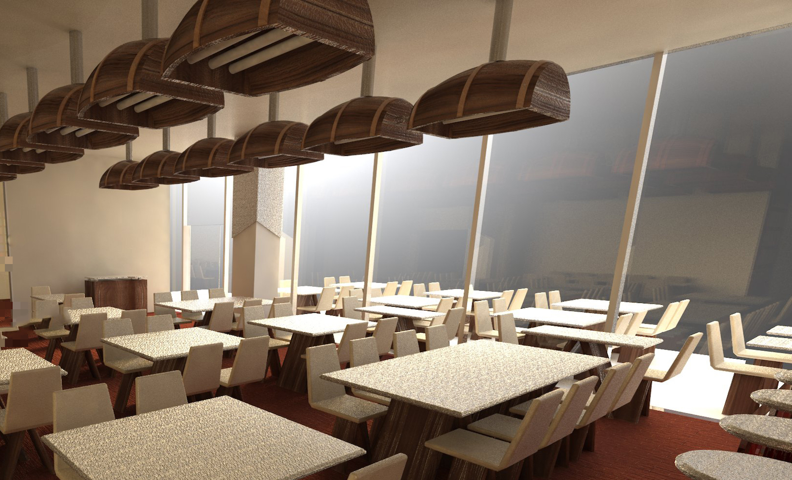

-
Main
Lobby
-
The
Lounge -
The
Bar -
The
Restaurant -
Restaurant

232 Seigel Hotel or Bushwick Hotel is located in Brooklyn, New York. The hotel is owned by Heritage
Equity partners and designed by Gensler. Along with my partner, we designed the first floor of the hotel
which is divided into two parts. A lobby and a restaurant.
Our design is very much inspired by Brooklyn's industrial areas. The exposed concrete and the copper
lighting fixtures give the space a modern rustic look which is very popular in Brooklyn. The same theme
is carried to the restaurant area where the same type of copper is used around the space. The lighting
fixtures in the restaurant are made up of old wine barrels which give the space a very unique look.
This whole space has two main entrances. The east entrance leads to hotel reception where guests can
check in or wait in the lounge area while there rooms are being prepared. If a guest wants to entertain
themselves with a drink while they wait the bar in the restaurant is designed in such a way that the
lobby also has access to it. The west is the restaurant with an indoor capacity of 60 guests and and
outdoors capacity of another 40 guests.